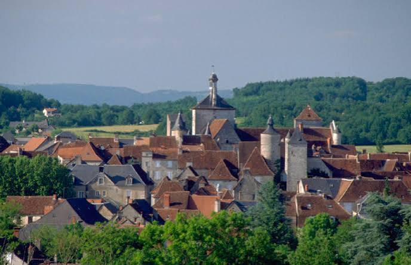

Causse
de Martel


⟹ Le Causse aux Mille Dolines ⟸
Le causse de Martel prolonge vers le nord le causse de Gramat, dont il est séparé par la vallée de la Dordogne. Constitué des mêmes plateaux calcaires déposés à l'époque jurassique, il présente un pendage léger et culmine à une altitude plus modeste, autour de 300 mètres, ce qui en fait le moins élevé des causses du Quercy.

À cheval sur le nord du Lot et le sud de la Corrèze, le causse est bordé par les vallées de la Vézère au nord, de la Tourmente à l'est et de la Dordogne au sud. Sa partie corrézienne prolonge le même socle géologique, preuve que le plateau ignore les limites administratives actuelles.
Le bourg de Martel, surnommé la « ville aux sept tours », s'est développé au Moyen Âge sur ce plateau, à l'écart des vallées, profitant de la sécurité qu'offrait le causse. Aujourd'hui encore, le train touristique du Truffadou emprunte l'ancienne voie ferrée taillée dans la falaise pour offrir un point de vue sur les méandres de la Dordogne, en contrebas du causse.
Contrairement au causse de Gramat, plus vaste et plus aride, le causse de Martel se distingue par la densité de ses dolines et par une occupation humaine qui s'est littéralement moulée dans le relief : nombre de hameaux et de fermes isolées occupent le fond des cuvettes, là où l'argile de décarbonatation retient un peu d'humidité et permet la culture.
Ce mode d'implantation, étudié par les archéologues et les paysagistes du Conseil d'architecture, d'urbanisme et de l'environnement (CAUE) du Lot, donne au causse de Martel un paysage bâti particulièrement lisible : chaque doline habitée raconte l'adaptation patiente d'une société paysanne à un sol difficile.
Le sous-sol du causse n'est pas en reste : comme sur l'ensemble des Causses du Quercy, il recèle un réseau karstique de grottes et de gouffres, moins connu du grand public que celui du causse de Gramat voisin, mais activement étudié par les archéologues, notamment lors des diagnostics menés autour de l'aérodrome de Brive-Souillac.
Un causse de transition. Au nord de la Dordogne, le causse de Martel prolonge les plateaux calcaires quercynois vers les marges du Bassin aquitain. L’alternance entre plateaux secs, vallées verdoyantes et petites dépressions cultivées explique un paysage moins uniformément aride que celui du causse de Gramat.
Les dolines structurent l’occupation humaine. Ces dépressions fermées concentrent des sols plus épais et plus fertiles, issus notamment de résidus argileux. Elles ont longtemps constitué des espaces privilégiés pour les cultures, les prés et l’implantation des hameaux, tandis que les parties pierreuses étaient davantage vouées au pâturage et aux bois.
La pierre comme fil conducteur. Murets, granges, maisons rurales, couvertures traditionnelles et chemins creux témoignent d’une économie qui utilisait directement les matériaux du plateau. Ce patrimoine vernaculaire complète celui, plus monumental, de Martel et des bourgs de la vallée de la Dordogne.
Une lecture à l’échelle du Quercy. Pour comprendre le causse de Martel, il est utile de le comparer aux autres plateaux calcaires voisins : partout, la dissolution du calcaire organise la circulation souterraine de l’eau, mais l’altitude, les sols, la végétation et l’histoire agraire produisent des paysages différents.
Documentation : Paysages et territoire des Causses du Quercy ↗ · Publications du Parc sur les paysages, le karst et le patrimoine ↗
Abandon des terres marginales : les parcelles les plus ingrates, en dehors des dolines fertiles, tendent à se refermer faute d'entretien agricole ou pastoral.
Pression foncière : la proximité de sites touristiques majeurs (Padirac, Rocamadour, vallée de la Dordogne) accentue la demande de constructions nouvelles sur un territoire au bâti traditionnel fragile.
Vulnérabilité du karst : comme partout sur les causses du Quercy, l'infiltration rapide des eaux de pluie rend les nappes souterraines sensibles aux pollutions de surface.
Érosion du petit patrimoine : bories, murets et toits de lauze demandent un savoir-faire spécifique dont la transmission n'est plus garantie.
Le bourg de Martel et sa halle du XVIIIe siècle constituent le point de départ classique pour explorer le causse, avec des visites guidées proposées en saison par l'office de tourisme.
Les circuits « villages de dolines », comme celui organisé autour de Cuzance, font découvrir cette forme d'habitat typiquement caussenard en compagnie de guides du patrimoine.
Le belvédère de Copeyre, entre Martel et Gluges, et le trajet du petit train touristique du Truffadou offrent des vues remarquables sur la vallée de la Dordogne depuis la bordure du causse.
Les sentiers de randonnée balisés permettent de rejoindre à pied le causse de Gramat voisin et le gouffre de Padirac, distant d'une dizaine de kilomètres.